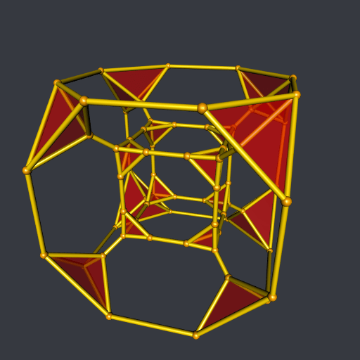

The modified stereographic projection
Some of my 3D animations start with a 4D object (such as a polytope) and I project it to the three-dimensional space with a stereographic projection. For example, the hyperbolic gircope. For this animation, I use the ordinary stereographic projection. But sometimes I don’t get a nice result with the ordinary stereographic projection, and then I use a “modified” stereographic projection, defined by \[ \text{Stereo}_\gamma(x) = \frac{\arccos(x_4/r)}{{\bigl(r^\gamma - {|x_4|}^\gamma\bigr)}^{\frac{1}{\gamma}}} \times (x_1, x_2, x_3), \] where \(r\) is the radius of the centered sphere in \(\mathbb{R}^4\) that we consider (for example \(r = \Vert x \Vert\) for a polytope whose all vertices have the same norm, otherwise one can take the higher norm).
In this post, I will show the result of this modified stereographic projection on some examples, with various values of \(\gamma\).
Truncated tesseract
library(cxhull)
# Stereographic-like projection ####
sproj <- function(v, r, gamma){
acos(v[4L]/r) / (r^gamma - abs(v[4L])^gamma)^(1/gamma) * v[1L:3L]
}
# vertices ####
sqr2p1 <- sqrt(2) + 1
vertices <- rbind(
c( -1, -sqr2p1, -sqr2p1, -sqr2p1 ),
c( -1, -sqr2p1, -sqr2p1, sqr2p1 ),
c( -1, -sqr2p1, sqr2p1, -sqr2p1 ),
c( -1, -sqr2p1, sqr2p1, sqr2p1 ),
c( -1, sqr2p1, -sqr2p1, -sqr2p1 ),
c( -1, sqr2p1, -sqr2p1, sqr2p1 ),
c( -1, sqr2p1, sqr2p1, -sqr2p1 ),
c( -1, sqr2p1, sqr2p1, sqr2p1 ),
c( 1, -sqr2p1, -sqr2p1, -sqr2p1 ),
c( 1, -sqr2p1, -sqr2p1, sqr2p1 ),
c( 1, -sqr2p1, sqr2p1, -sqr2p1 ),
c( 1, -sqr2p1, sqr2p1, sqr2p1 ),
c( 1, sqr2p1, -sqr2p1, -sqr2p1 ),
c( 1, sqr2p1, -sqr2p1, sqr2p1 ),
c( 1, sqr2p1, sqr2p1, -sqr2p1 ),
c( 1, sqr2p1, sqr2p1, sqr2p1 ),
c( -sqr2p1, -1, -sqr2p1, -sqr2p1 ),
c( -sqr2p1, -1, -sqr2p1, sqr2p1 ),
c( -sqr2p1, -1, sqr2p1, -sqr2p1 ),
c( -sqr2p1, -1, sqr2p1, sqr2p1 ),
c( -sqr2p1, 1, -sqr2p1, -sqr2p1 ),
c( -sqr2p1, 1, -sqr2p1, sqr2p1 ),
c( -sqr2p1, 1, sqr2p1, -sqr2p1 ),
c( -sqr2p1, 1, sqr2p1, sqr2p1 ),
c( sqr2p1, -1, -sqr2p1, -sqr2p1 ),
c( sqr2p1, -1, -sqr2p1, sqr2p1 ),
c( sqr2p1, -1, sqr2p1, -sqr2p1 ),
c( sqr2p1, -1, sqr2p1, sqr2p1 ),
c( sqr2p1, 1, -sqr2p1, -sqr2p1 ),
c( sqr2p1, 1, -sqr2p1, sqr2p1 ),
c( sqr2p1, 1, sqr2p1, -sqr2p1 ),
c( sqr2p1, 1, sqr2p1, sqr2p1 ),
c( -sqr2p1, -sqr2p1, -1, -sqr2p1 ),
c( -sqr2p1, -sqr2p1, -1, sqr2p1 ),
c( -sqr2p1, -sqr2p1, 1, -sqr2p1 ),
c( -sqr2p1, -sqr2p1, 1, sqr2p1 ),
c( -sqr2p1, sqr2p1, -1, -sqr2p1 ),
c( -sqr2p1, sqr2p1, -1, sqr2p1 ),
c( -sqr2p1, sqr2p1, 1, -sqr2p1 ),
c( -sqr2p1, sqr2p1, 1, sqr2p1 ),
c( sqr2p1, -sqr2p1, -1, -sqr2p1 ),
c( sqr2p1, -sqr2p1, -1, sqr2p1 ),
c( sqr2p1, -sqr2p1, 1, -sqr2p1 ),
c( sqr2p1, -sqr2p1, 1, sqr2p1 ),
c( sqr2p1, sqr2p1, -1, -sqr2p1 ),
c( sqr2p1, sqr2p1, -1, sqr2p1 ),
c( sqr2p1, sqr2p1, 1, -sqr2p1 ),
c( sqr2p1, sqr2p1, 1, sqr2p1 ),
c( -sqr2p1, -sqr2p1, -sqr2p1, -1 ),
c( -sqr2p1, -sqr2p1, -sqr2p1, 1 ),
c( -sqr2p1, -sqr2p1, sqr2p1, -1 ),
c( -sqr2p1, -sqr2p1, sqr2p1, 1 ),
c( -sqr2p1, sqr2p1, -sqr2p1, -1 ),
c( -sqr2p1, sqr2p1, -sqr2p1, 1 ),
c( -sqr2p1, sqr2p1, sqr2p1, -1 ),
c( -sqr2p1, sqr2p1, sqr2p1, 1 ),
c( sqr2p1, -sqr2p1, -sqr2p1, -1 ),
c( sqr2p1, -sqr2p1, -sqr2p1, 1 ),
c( sqr2p1, -sqr2p1, sqr2p1, -1 ),
c( sqr2p1, -sqr2p1, sqr2p1, 1 ),
c( sqr2p1, sqr2p1, -sqr2p1, -1 ),
c( sqr2p1, sqr2p1, -sqr2p1, 1 ),
c( sqr2p1, sqr2p1, sqr2p1, -1 ),
c( sqr2p1, sqr2p1, sqr2p1, 1 )
)
# convex hull (= truncated tesseract, cause it is convex) ####
hull <- cxhull(vertices)
edges <- hull[["edges"]]
ridges <- hull[["ridges"]]
# triangles (of the tetrahedra in the corners) ####
ridgeSizes <- vapply(ridges, function(ridge){
length(ridge[["vertices"]])
}, integer(1L))
triangles <- t(vapply(
ridges[ridgeSizes == 3L],
function(ridge) ridge[["vertices"]],
integer(3L)
))
# projected vertices ####
# we also normalize them so that the higher norm is 1
r <- sqrt(1 + 3*sqr2p1^2)
verts3D <- function(gamma){
verts <- t(apply(vertices, 1L, function(v) sproj(v, r, gamma)))
verts / sqrt(max(apply(verts, 1L, crossprod)))
}Below is the code for the animation (\(\gamma\) varies from \(1.5\) to \(2.5\)). I use my ‘gifski’ batch command to make the GIF.
library(rgl)
gamma_ <- seq(1.5, 2.5, by = 0.025)
open3d(windowRect = c(100, 100, 612, 612))
bg3d("#363940")
view3d(15, 25, zoom = 0.9)
for(j in seq_along(gamma_)){
points <- verts3D(gamma_[j])
for(i in 1L:nrow(edges)){
edge <- edges[i, ]
shade3d(cylinder3d(
rbind(
points[edge[1L], ],
points[edge[2L], ]
),
radius = 0.015, sides = 90
), color = "gold")
}
for(i in 1L:nrow(triangles)){
triangle <- triangles[i, ]
triangles3d(
rbind(
points[triangle[1L], ],
points[triangle[2L], ],
points[triangle[3L], ]
),
color = "red", alpha = 0.4
)
}
spheres3d(points, radius = 0.025, color = "orange")
rgl.snapshot(sprintf("pic%03d.png", j))
clear3d()
}
command <-
"gifski --frames=pic*.png --fps=9 -b -o ModifStereoTruncTesseract.gif"
system(command)
The effect of \(\gamma\) is interesting: the interior tetrahedra become bigger when it increases while the exterior tetrahedra become smaller.
Hopf torus
Now, the Hopf torus. For more efficiency, I modify the parametric3d function of the misc3d package.
library(rgl)
library(misc3d)
Stereo <- function(q, gamma){
acos(q[, 4L]) / (1 - abs(q[, 4L])^gamma)^(1/gamma) * q[, 1L:3L]
}
parametricMesh3d <- function(gamma, r1, r2, r3){
v1 <- Stereo(r1, gamma)
v2 <- Stereo(r2, gamma)
v3 <- Stereo(r3, gamma)
tris <- makeTriangles(v1, v2, v3)
mesh0 <- misc3d:::t2ve(tris)
addNormals(
tmesh3d(
vertices = mesh0$vb,
indices = mesh0$ib
)
)
}
A <- 0.44
n <- 3
Hopf4D <- function(t, phi){
alpha <- pi/2 - (pi/2-A)*cos(n*t)
beta <- t + A*sin(2*n*t)
sin_alpha <- sin(alpha)
p1 <- sin_alpha * cos(beta)
p2 <- sin_alpha * sin(beta)
p3 <- 1 + cos(alpha)
cos_phi <- cos(phi)
sin_phi <- sin(phi)
cbind(
cos_phi*p3,
sin_phi*p1 - cos_phi*p2,
cos_phi*p1 + sin_phi*p2,
sin_phi*p3
) / sqrt(2*p3)
}
u <- seq(-pi, pi, length.out = 300)
v <- seq(0, 2*pi, length.out = 200)
tg <- misc3d:::expandTriangleGrid(u, v)
h <- function(uv) Hopf4D(uv[, 1L], uv[, 2L])
r1 <- h(tg$v1); r2 <- h(tg$v2); r3 <- h(tg$v3)Below is the animation when \(\gamma\) varies from \(0.8\) to \(2\).
gamma_ <- seq(0.8, 2, by = 0.025)
open3d(windowRect = c(100, 100, 612, 612))
bg3d("#363940")
view3d(90, 0, zoom = 0.7)
for(i in seq_along(gamma_)){
mesh <- parametricMesh3d(gamma = gamma_[i], r1, r2, r3)
shade3d(mesh, color = "green")
rgl.snapshot(sprintf("pic%03d.png", i))
clear3d()
}
command <-
"gifski --frames=pic*.png --fps=9 -b -o ModifStereoHopfTorus.gif"
system(command)
So the Hopf torus becomes more compact as \(\gamma\) increases.
Stereographic duoprism
In the post devoted to the stereographic duoprism I also use the ordinary stereographic projection. Let’s see what happens with the modified stereographic projection.
library(rgl)
A <- 3L
B <- 24L
# construction of the vertices ####
vertices <- array(NA_real_, dim = c(A, B, 4L))
for(i in 1L:A){
v1 <- c(cos(i/A*2*pi), sin(i/A*2*pi))
for(j in 1L:B){
v2 <- c(cos(j/B*2*pi), sin(j/B*2*pi))
vertices[i, j, ] <- c(v1, v2)
}
}
# construction of the edges ####
edges <- array(NA_integer_, dim = c(2L, 2L, 2L*A*B))
dominates <- function(c1, c2){
c2[1L] > c1[1L] || (c2[1L] == c1[1L] && c2[2L] > c1[2L])
}
counter <- 1L
for(i in seq_len(A)-1L){
for(j in seq_len(B)-1L){
c1 <- c(i, j)
candidate <- c(i, (j-1L) %% B)
if(dominates(c1, candidate)){
edges[, , counter] <- cbind(c1, candidate) + 1L
counter <- counter + 1L
}
candidate <- c(i, (j+1L) %% B)
if(dominates(c1, candidate)){
edges[, , counter] <- cbind(c1, candidate) + 1L
counter <- counter + 1L
}
candidate <- c((i-1L) %% A, j)
if(dominates(c1, candidate)){
edges[, , counter] <- cbind(c1, candidate) + 1L
counter <- counter + 1L
}
candidate <- c((i+1L) %% A, j)
if(dominates(c1, candidate)){
edges[, , counter] <- cbind(c1, candidate) + 1L
counter <- counter + 1L
}
}
}
# stereographic-like projection
stereog <- function(v, gamma){
r <- sqrt(2)
acos(v[4L]/r) / (r^gamma - abs(v[4L])^gamma)^(1/gamma) * v[1L:3L]
}
# spherical segment
sphericalSegment <- function(P, Q, n){
out <- matrix(NA_real_, nrow = n + 1L, ncol = 4L)
for(i in 0L:n){
pt <- P + (i/n)*(Q-P)
out[i+1L, ] <- sqrt(2/c(crossprod(pt))) * pt
}
out
}
# stereographic edge
stereoEdge <- function(verts, v1, v2, gamma){
P <- verts[v1[1L], v1[2L], ]
Q <- verts[v2[1L], v2[2L], ]
PQ <- sphericalSegment(P, Q, 100L)
pq <- t(apply(PQ, 1L, stereog, gamma = gamma))
dists <- sqrt(apply(pq, 1L, crossprod))
cylinder3d(pq, radius = dists/15, sides = 60)
}
# projected vertices
verts3D <- function(gamma){
apply(vertices, c(1L, 2L), stereog, gamma = gamma)
}The animation for \(\gamma\) varying from \(0.8\) to \(2\):
gamma_ <- seq(0.8, 2, by = 0.025)
open3d(windowRect = c(50, 50, 562, 562))
view3d(0, 0, zoom = 0.7)
bg3d(rgb(54, 57, 64, maxColorValue = 255))
for(frame in seq_along(gamma_)){
gamma <- gamma_[frame]
## plot the edges
for(k in 1L:(2L*A*B)){
v1 <- edges[, 1L, k]
v2 <- edges[, 2L, k]
edge <- stereoEdge(vertices, v1, v2, gamma)
shade3d(edge, color = "gold")
}
## plot the vertices
vs <- verts3D(gamma)
for(i in 1L:A){
for(j in 1L:B){
v <- vs[, i, j]
spheres3d(v, radius = sqrt(c(crossprod(v)))/10, color = "gold2")
}
}
rgl.snapshot(sprintf("pic%03d.png", frame))
clear3d()
}
command <-
"gifski --frames=pic*.png --fps=9 -b -o ModifStereoDuoprism.gif"
system(command)